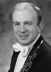

|  |
Oboist Pierre Roy attended the New England Conservatory of Music in Boston where he obtained his Bachelors and Masters Degrees as a student of Alfred Genovese. During the course of his curriculum at the Conservatory, Mr. Roy also became a member of the Honors Woodwind Quintet, coached by the renowned violinist Louis Krasner. The quintet entered and won the prestigious Coleman Award for chamber music in Pasadena, California. Mr. Roy was a featured soloist at the Conservatory’s Commencement concert ceremonies. Shortly thereafter he was named as a fellow at Tanglewood, performing there during
the summers of 1989 and 1991.
Pierre started his professional career as assistant principal oboe with the Portland symphony Orchestra in Maine for one season. The following year he began work as adjunct instructor of music at the University of Evansville in Indiana and as the principal oboist of the Evansville Philharmonic Orchestra. While living in Evansville, he performed, toured and recorded as
associate principal oboe for one season with the St. Louis Symphony Orchestra, including tours of Europe and the west coast of the U.S.A. During this interval Mr. Roy has also performed with the Indianapolis Symphony and performed and recorded with the Louisville Symphony.
Pierre Secured his current position as BPO principal oboist in 1995, during the tenure of music director Maximiano Valdes. In November of 1997 he was the featured soloist on a BPO Classics subscription concert, playing Vaughan Williams’ Concerto for Oboe and Strings under the baton of visiting Maestro Hobart Earle. |